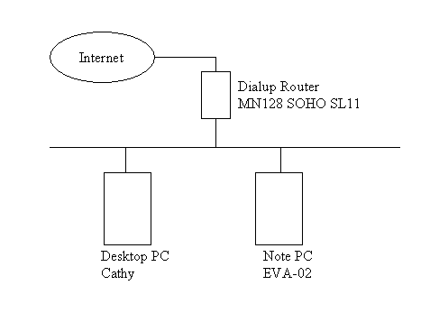

7月下旬、ビジネスFOMA(M1000)が会社から貸与される。かわりに(≒そのせいで)PHSパルディオ642Sの外線契約が切られて、内線通話用となる。で、FOMA M1000で通話しようとすると液晶画面に顔の油がついちゃうし、PDA的な使い方からすると単に拭けばいいっていう風に納得できなかったので、Bluetoothのヘッドセットを購入する。PLANTRONICSのM2500という製品。有楽町のビックカメラで、7,800円。これが、なかなかいい感じ。でも、はたから見るとヘン。これは市民権得られるまでに、かなり長い時間がかかりそう……というか、そこまでいたらないかも。
POPFileの続き(前回)。現在のネットワーク構成図は、こんな感じ。
右下のノートPC「EVA-02」(弐号機)でAL-Mailを起動して、メールを送受信している。どうしてデスクトップPC「Cathy」で送受信しないのかというと、ノートPCの方が機動性があるから。ただし弐号機(EVA-02)の起動する頻度は低くて、メールが来ているか否かは別の方法(Web mail)をとっていた。過去形なのは、7月下旬にSpam Mail KillerをデスクトップPC「Cathy」に導入/設定したため。でもPOPFileと違って、Spam Mail Killerは色々設定してあげないとダメなのね。自動削除されなかったものは、メールの手動削除で一括削除している。
こーゆー構成をしているから、POPFileをproxyとして動かすのはダメなのよ……と書こうとして、はたと気がつく。一体なにが、ダメなんだ?>自分。デスクトップPC「Cathy」にPOPFileを導入/設定してproxyとして動作させても、メールをPOP3で取りに行くのは弐号機(EVA-02)上のメーラー「AL-Mail」が要求したときだけ。であれば、問題ないっしょ(←サーバー上のメールが、別のマシン(ここでは「Cathy」)から見に行ったときに消えてしまうのを心配している)。ちと先になりそうですが、そのうち試してみますです。THX!>NABさん。
飛鳥山公園へ。都営一日乗車券を購入して、まずは西巣鴨へ。炎天下を歩くのはなんかやばそうだったので、都バス草63系統にバス停一個分だけ乗って新庚申塚へ。都電荒川線で飛鳥山へ。飛鳥山公園の紙の博物館へ入り、紙すき体験教室でハガキを作成する。公園をぐるっと散策したあと、音無親水公園を経由して王子駅へ。王子から都電で庚申塚へ移動して、巣鴨とげぬき地蔵へ。おばあちゃんの原宿という文字通りの場所だった。16時すぎで、ビミョーな時間。庚申塚へ戻って、東池袋でサンシャインに寄ってみる。適当に時間をつぶして、再度東池袋から都電で早稲田へ。
早稲田のリーガロイヤルホテルの道をはさんだ正面に「うだつ食堂」というラーメン屋がある。たしか熊本ラーメン。で、そこに行ってみたらお盆休み。まー少しだけ予想はしていたんだけど、時間も早いしとりあえず行ってみようという感じだったもので。そこで今度は都バスで、新宿西口へ移動。新宿エルタワーの「ねぎし」で牛タン……と思ったのだが、牛タンは高いので別のものにした。ちと仕事に必要になりそうなので、もともと前から欲しいと思っていたポータブルHDDをヨドバシカメラで購入する。バッファローのHD-PH80U2/UC(2.5inch, 80GB, 5400rpm)。
POPFileの続き(3回目)。やっぱり頭がマトモに働いていない。POPFileをproxyとして動かすということは、弐号機(EVA-02)上のAL-Mailの設定でメールサーバーをデスクトップPC「Cathy」にするってこと。しかし、そもそも弐号機(EVA-02)でメールを送受信する構成にしているのは、ノートPCとしての機動性を鑑みた結果。であれば、弐号機(EVA-02)上のAL-Mailの設定でメールサーバーをproxyサーバーにすることは意味がない。これって元凶という表現はナニだけど、RIMNETのアドレスに来るメールのほとんどがメールマガジンとSPAMだからのような気がしてきた。
疲れが、なかなか抜けない。しかし、どこにも行かないわけにもいかない。等々力渓谷を散策してみる……と書きつつ、Webで見つけたコースを歩いてみたので結構長い。紹介されているコースは桜新町を起点として、谷沢川が多摩川に流れ込むところまで南下して、砧(きぬた)公園をぐるっとまわって桜新町に戻って来る。んが、暑いし疲れちゃうので用賀スタートに変更する。まずは昼メシを食って、谷沢川沿いに南下していく。途中川沿いから少し外れるが、道なりにすすむと等々力渓谷のゴルフ橋に到着。さすがに、人が多い。等々力不動尊には寄らずに、さらに南下する。
多摩川の手前で、川が交差するところがある。川の立体交差、である。プロレス団体(新日本プロレス?)の横を通って、多摩川沿いの道に出る。河原をのんびり歩いて北上する。第三京浜の下をくぐり二子玉川駅に近づいたところで、お嫁さんが暑さでノックアウト。今日は、ここまでとする。髙島屋裏のnews DELIなる喫茶店で休んでから、髙島屋をブラブラと散策(?)。余力があったら新宿のヨドバシカメラで無線LANルーター(8月下旬に発売されたI-O DATAの製品)を購入するつもりだったのだが、自分も体力切れで帰宅。眠すぎる。
F1トルコGP、予選。みんな、第8コーナーでミスっている。ということは……とワクワクして観ていたら、予想通り琢磨はコースアウト。リタイアしてタイムなしとはならなかったが、いかにもという結果はいい加減マズイだろ。この頃バリチェロのBARへの移籍が噂されているが、バトンがBARに残らなかったとしてもこんなことでは琢磨のシートはないぞ。決勝では、モントーヤが最後の最後でやってくれちゃったよ。でも、楽しいね。笑っちゃうしかないでしょ。F1はつまらなくなったと毎年同じようなことを聞くけど、今年のF1はおもしろいぞ。